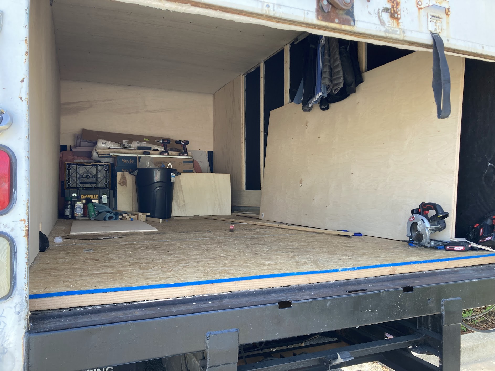
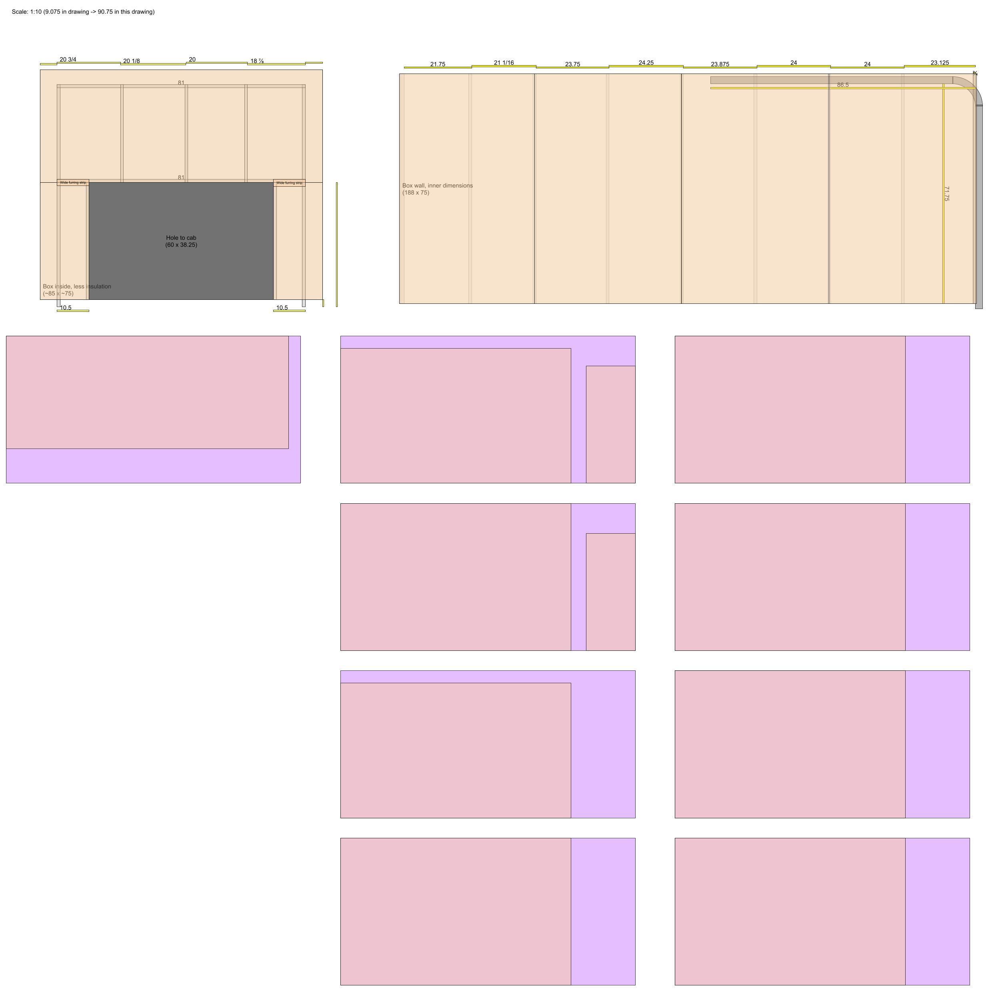
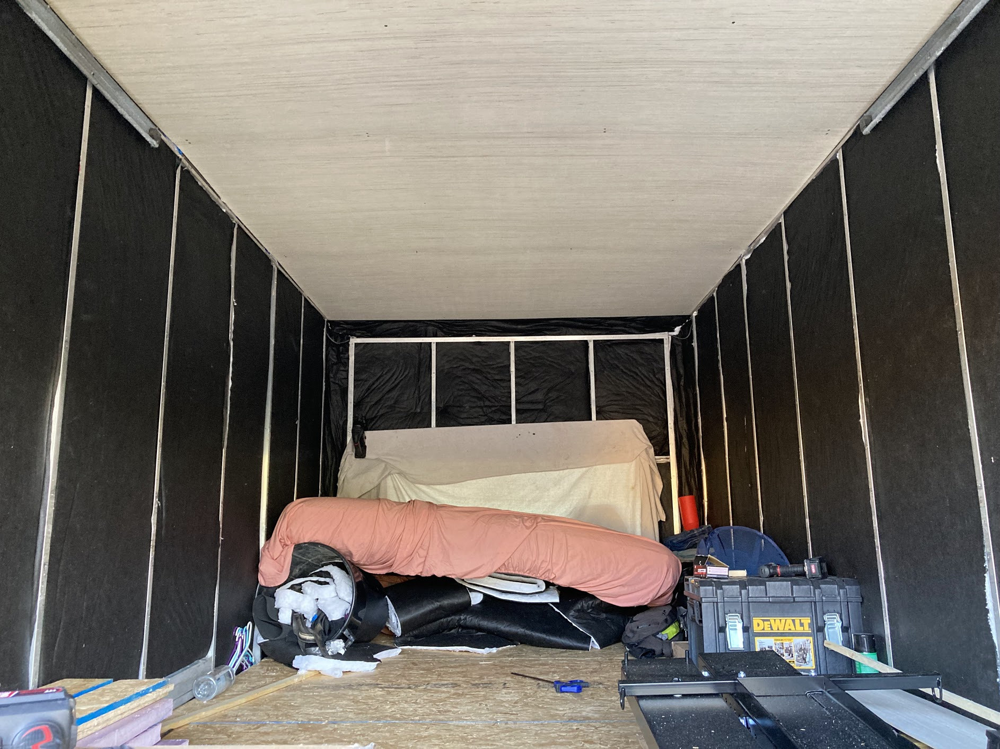
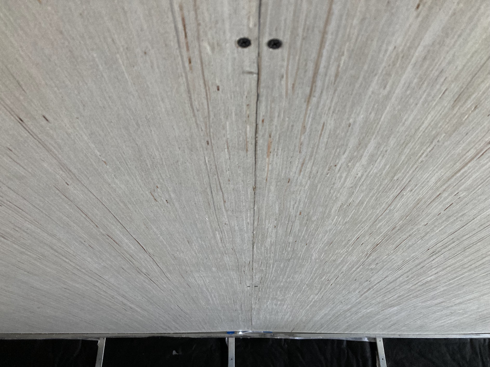

Conversion updates
This page captures the conversion process from start to finish.
Lets make my vision come true!
Chat me up at brandonsbento@gmail.com.
- One wall step for man
- Slowly but surely...
- Are we there yet?
- The very first post
17 Apr 2022
I have so much more space now that these walls are walls and not pieces of wood on the floor.
I managed to put up about half of the walls this weekend before my batteries died on the tools I'm using.
To begin with, I installed furring strips on every aluminum stiffener in the box.
These furring strips are the structural elements to which I'll attach the walls and likely any particularly-heavy later installations (like a Murphy bed).
Most of the stiffeners got 1" furring strips, but those stiffeners at which two wall panels meet got a 3" furring strip.
Once the furring strips were in, I was able to cut the 1/2" plywood to size and secure it to the furring strips.
Reducing weight is the name of the game (praying for manageable gas mileage), so why use 1/2" walls?
Well:
- I want to attach things directly to the walls. If I used anything thinner than 1/2" it wouldn't be possible. Attaching to the furring strips as a requirement just seemed like a pain in my future ass.
- I want the walls to feel solid. If I'm afraid to lean against the wall for fear of breaking it, that's not a wall -- that's a tissue.
I started with the wall attached to the cab and then did the left side wall.
Unfortunately, that's all the further I got this weekend.
The entire right side of the truck is still just furring strips and insulation since my tools ran out of batteries.

Speaking of battery powered tools, for this entire conversion, I have the following power tools.
They are all battery powered and all Hyper Tough (Walmart) brand.
They've been working great!
- Circular saw
- Jigsaw
- Impact driver
- Drill
I also make extensive use of the following (arguably) unpowered tools.
- Clamps
- Speed square
- Framing square
- Tape measure
- Pocket knife
- Google Drawings
- Among various other items.
With half of the walls up, the next thing to sort out is... putting the other half of the walls up.
After that though, I'll probably:
- Paint the ceiling.
- Paint the walls.
- Build various things in ambiguous order, including
- A Murphy bed.
- Storage places.
- A couch.
- Install the floors.
- Worry about the various long-time-horizon items I'm imagining, including
- Electricity and solar power.
- Water, plumbing, and shower.
- A kitchen counter with sink, stove, etc.
So anyway, as you can imagine it's going to take me a long time to finish this since I pretty much only get to work on it on weekends.
Stay tuned for more updates!
10 Apr 2022
Today I spent a lot of time planning, so not much actual progress to speak of.
I was able to install a small number of furring strips on the walls of the truck in preparation for installing the actual walls.
I mostly use Google Drawings to plan out the conversion; it works surprisingly well.
Here is a view of the side walls and cab-attached wall of the truck.
This shows the dimensions I'll need, and I end up using it as a cut list too.
It was super helpful this time around since the structural aluminum beams are not spaced uniformly.

Tomorrow is Monday, and I work a lot.
It's pretty likely that there won't be any further conversion progress until next weekend.
9 Apr 2022
No.
Despite having the box truck for a few months now and living in it for the past month and a bit, I haven't actually made a ton of progress on it.
At this point, the things I've accomplished include:
Registration (a painful process -- thanks, DMV!)
Registration was a major pain.
The DMV told me that I need to get the vehicle inspected to prove that it has been converted to a motorhome, but when I bought it it was just an empty box truck.
TL;DR I rushed to "convert" it, it looked like garbage, the DMV said "Oh you don't need an inspection", and now it's registered.
What a pain.
Floor insulation and subfloor installation
I used 1.5 inch foam insulation spaced between 2x4s for the floor insulation.
On top of that I installed plywood that I cut down to the width of the box.
The gapping is pristine, if I do say so myself.
Wall and ceiling insulation
Thinsulate is dope.
Easy to work with, easy to cut to size, and decent insulation value.
I covered all the walls and ceiling in 2 inch thinsulate.
At this point I was living in the truck full time, so lots of my stuff is scattered everywhere in these pics.
Ceiling panel installation
Working alone overhead with 4 ft x ~8 ft panels is a ton of fun.
I highly recommend it.


I bought a box truck, and I'm turning it into an RV, sort of.
Hopefully I'll update this website reasonably often, but who knows.
Anyway, here's a picture of what I lovingly call the bento box.